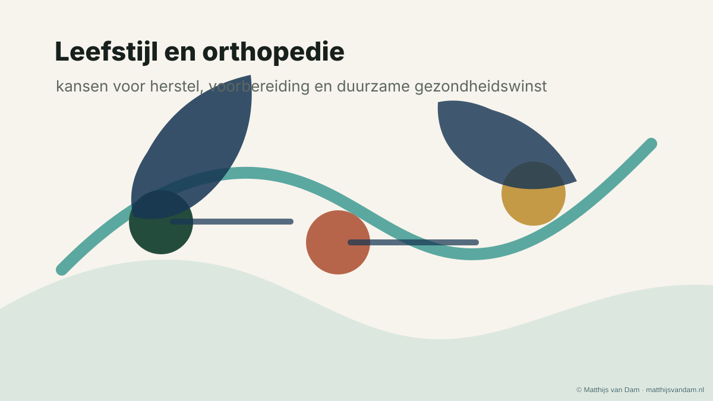

NOV-project
Leefstijlgerichte kansen in de orthopedie
Een project over teachable moments, patiëntperspectief en praktische handvatten om leefstijl zorgvuldig bespreekbaar te maken.
Bekijk projectProjecten
Een overzicht van projecten waarin orthopedische zorg, leefstijl, onderzoek, digitale toepassingen en regionale samenwerking samenkomen.

NOV-project
Een project over teachable moments, patiëntperspectief en praktische handvatten om leefstijl zorgvuldig bespreekbaar te maken.
Bekijk projectOnderzoek
Onderzoek naar een digitaal transmuraal zorgpad voor mensen met artrose en obesitas, mede mogelijk gemaakt door het Heracleum Hulpfonds.
Bekijk project
AR en leefstijl
Een ontwikkel- en onderzoeksproject met Tilburg University over augmented reality en duurzame beweeggewoonten.
Bekijk project
3D-planning
Van CT-gebaseerde planning naar patiënt-specifieke boormallen bij complexe voet- en enkelchirurgie.
Lees artikel